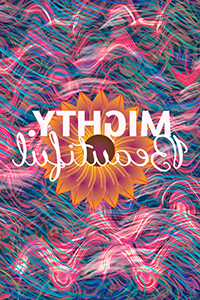

Creative
Flow Tarot





Shuffle the deck as much as you want, then click on the card
you want to select, or Gather and spread the cards to select one.
you want to select, or Gather and spread the cards to select one.


Ace of Swords
The Magic Mushroom card is about new creative beginnings. Something in the air is stirring. A storm is brewing, and it’s about to pour rain. You’ve had a project you wanted to work on for a long time sitting in the back of your mind; maybe something you’ve even forgotten about. But now is the time to water those seeds again. The Ace of Swords represents a new energy and a significant breakthrough. You’ll figure out how to finish a project long ago put on hold. It will require you to learn a new skill, but the challenge will be worthwhile. Your biggest creative block lie in a hesitancy to share your idea and get feedback from others; perhaps you’ve got too many unfinished projects already and you’re afraid to talk about them for fear that others will hold you accountable for not finishing. But there is no timeline for creativity; some projects can percolate for years before lightning strikes. Discuss your projects with people who ask how you’re doing; spend some time defining and planning your project.
Two of Swords
The Book of Creativity card is about finding balance within your creative knowledge and pursuits. Perhaps you’ve been too focused on something that does not suit you, or overly focused on the thing that pleases you the most; either option leads to imbalance and an eventual impasse. Try to adjust your routine so that you’re spending time both inside your comfort zone and outside of it; for every hour you spend doing the thing you love doing the most spend 20-30 minutes doing the thing you hate doing the most but that must still be done. Your biggest creative block may come from procrastinating on something that must be done; do it, and reward yourself appropriately.
Three of Swords
The Unity card is about finding creative unity and emotional release. Your biggest creative block may come from negative self-talk, someone close to you who said something that hurt your feelings or directly hit your creative spirit, recent heartbreak, grief, sorrow or other emotions that you’ve been avoiding or otherwise unable to process. Now is the time. Join a new group or become more active in a group you’ve been lurking on the outskirts of; make new friends and allow yourself the gift of vulnerability. Find a safe space to express your feelings, and do so without shame. Howl at the moon, cry, scream - whatever it takes to feel a release, let your emotions flow through you, and pay attention to what your self-talk is telling you. If your self-talk is negative, demand that it be kinder. Make sure you are treating yourself wit love. Create something abstract and wild — an acrylic pouring, a spoken word poem, an interpretative dance — and share it in the most positive space available to you.
Four of Swords
The Hummingbird is about solitude and creating a closer connection between you and your Creator - but through open thought and meditation. Your creative block may come from trying to force yourself to flow in a way that you’re not meant to go at this time; you’re overly attempting to overly control your creative spirit instead of letting your creative spirit control you. You might need to add some form of meditation into your routine: practice some tai chi, improvise on an instrument, pick up a coloring book, create a mandela, focus on making patterns and the patterns around you. Allow your creative spirit to get into a pattern with you.
Five of Swords
The Five Eagles is about war, competition and victory. Creativity is never a competition so if it’s starting to feel like one, it’s time to step back and remember why you create, what it is that drives your soul, what it is that will bring you peace and purpose. Often, this is a card about failure, acceptance and forgiveness. Your biggest creative block might lie in the comparisons you make between yourself and other people; shut that down. It could also lie in a project you’re not happy with or a fear of failure; remember that failure is necessary for success. Perhaps you should do something that you know you will most likely fail at that could be helpful to your creative pursuits but is not necessary; something that you can fail at without judging yourself for it. Try to learn to code if you’ve never coded before; take a class in glass blowing; start a novel; start something big that you might never finish. And after you’ve started and failed, if you fail, stop and get back to your other projects, remembering that failure is temporary.
Six of Swords
The Six Seagulls is about transition and change. It’s a card of growth and tying up loose ends. You might have just wrapped up a project and are unsure of what to work on next, or hit a creative plateau on something you’ve lost interest and become stuck in. But have no fear and let the water and flow guide you. Trust your life’s current. Think of your goals. Let your causes lead the way. Do you have at least one goal that helps improve the world in some way, no matter how small? Start there, because right now in the midst of so much unknown is when you’re creating your world the most. Take some time to give back in some way and new creative projects and energy will come to you in abundance. Pick up trash in your favorite park or neighborhood, create a way to raise funds for one of your favorite organizations, or make a poster to help educate your friends about something important to you.'
Seven of Swords
The Parrot Pirate: The Seven of Swords is about the lies you tell yourself or other people that are holding you back. There is an inner struggle or grievance that your psyche is focused on but that you are afraid to express. Perhaps you are angry at yourself for some failure, feel guilt about a conversation or argument with a loved one, or have been lying about your inner well-being. This is a card about telling your truth and dealing with deceit, theft, fraud, hidden secrets. Think about the ways in which your truth or story can be shared in a way that is helpful and not harmful, and tell it in some way. Are you telling yourself you need more than what you have when you already have plenty? Think about your mantras, the things you repeat to yourself again and again and again. Remember there are no absolutes. To help with this creative block, create something that allows your mind to wander, whether its an abstract painting of the feeling that your lie makes you carry, a poem, or a sculpture of a symbolic object - but use the creative process to tell yourself the truth about whatever situation or belief is troubling you.
Eight of Swords
The Caged Bird card represents all the ways in which a person can hold themselves back: how negative self-talk imposes restrictions on what a person believes they can and can not do, and all the ways in which insecurities can be the control levers we use to hold ourselves back from the freedoms and flow we seek. A hummingbird flaps her wings, stuck in the tiny cage of her mind, fearful of leaving even though the door is open. What you must do is turn any negative thoughts that are creeping around upside down. For every negative thought that persists, create a poster based on the opposing positive thought, and repeat the positive thought throughout the process. Use these positivity posters as mantras to stay free from your cage of "I can not".
Nine of Swords
The Nine-Eyed Raven card represents the dark thoughts that keep you up in the middle of the night and the process of working through your fears. The Nine of Swords is the card of monsters and nightmares: of indecision, of being pulled in different directions, of the heart being pulled apart. The Canary sits frozen in its nest on a stormy, swirling night; it is not safe from its dreams, or its environment. The swords represent the anxieties and worries she is fighting. If they hit their target, these swords can become a self-fulfilling prophecy on the way to failure. To combat this creative block, spend 20 minutes on a creative meditation exercise like coloring, crocheting, drumming that allows you to stop worrying and focus solely on the repetitive motion activity at hand. And then think about the things that scare you in a more focused way: What are they? Find inspiration in on what it is you are indecisive about or fearful of. What are you choosing between? What are you afraid of losing? Create a metaphor for how having to make that choice makes you feel, or create a story for the monster that is making you choose.
Ten of Swords
The Tragic Flamingo card represents a painful ending, a deep loss and the end of a cycle. A flamingo lies dying in a shallow pond, struck in her head by a sword, surrounded by nine other swords and pools of blood. This is the card of grief. But with endings come beginnings, with deep losses come new gains, and at the end of any cycles lie the unlimited possibilities that come from learning, changing and growing. The sun sparkles on the water and the Flamingo awaits her new, enlightened and transformed self. To get past this creative block, write or create a love letter or some sort of tribute for your loss that talks about what you stand to gain after the pain.'
Spirit of Swords
The Phoenix shows a great, beautiful bird rising above a lake caught on fire, controlling a powerful sword or state of knowledge akin to the enlightenment that comes from being inside a spiritual realm. This card represents renewal, new ideas and a new burst of energy after a period of rest or low flow. There is nothing that can stop you now but yourself. With so much built up energy, the biggest creative block is most likely the feeling of being overwhelmed, of not knowing exactly where to thought, or of being pulled into too many directions. Don’t write a to-do list. Write out the bigger picture. What do you need to learn to get started?
Knight of Swords
The Striking Owl shows an owl holding a powerful sword of knowledge, killing a snake in a stormy desert. The eagle’s wings are spread and the sword is perfectly straight, showing determination and expertise, while the owl represents an evolved knowledge capable of nearly anything. The owl will need to put all that knowledge to use to beat the coming storm, but it will be worth it when the desert blooms. The challenge here is the risk of burnout, impatience, or trying to do too much, too fast. You’re on a mission, and you need to stay focused. But sometimes focus is improved by breaking it. What have you been spending all your time on lately? Take however much time you can spare to do the opposite.
Goddess of Swords
The Goddess of Swords shows a beautiful woman showing off her feathers, representing the mastery of inner strength that comes from overcoming loss and personal suffering. She is a symbol of freedom, beauty and intelligence, which makes her powerful and resourceful. The Queen possesses all the knowledge, skills and instincts necessary to get through any situation and to get the truth in all matters. Her knowledge is capable of changing the world. She knows herself inside and out and is comfortable in her own skin, though she is also a master of transformation and change and is able to read which way the wind will blow. Her energy works to give everyone the insight and power they need to become fully themselves. The challenge here could be pride or ego, or a lack thereof. Share your work with others. Hear what they have to say. What does your soul have to say? What are the winds telling you?
God of Swords
The purveyor of enlightenment, advice and knowledge; an authority figure or higher power. The God of Swords radiates deep knowledge, truth, understanding and intuition during a search for truth, answers, meaning or purpose. Their special insight into nature and the universe allows them to see what others cannot. This is a card that asks you to reconnect with nature, the ultimate creative spirit. Your biggest creative block may come from a lack of direction; your intuition may be all over the place. Go somewhere green and quiet and talk to yourself amongst flowers and trees; or, if it’s the middle of winter, inspire yourself by reminiscing about the last beautiful place you went to. Go through old photographs, plan a future journey, imagine a conversation with a mountain and write it down.
Ace of Wands
The Magician card shows an octopus holding a wand, manifesting the beginnings of a beautiful coral reef. The is a card about inspiration and the thoughts and ideas that most excite you. You’re just getting swept up into something, which means it’s just the beginning of the ride. Stay flexible, go down those rabbit holes, take notes. You’ll know when it’s time to relax but for now, go to your favorite creative space and let loose. Don’t forget to stop and dance every so often.
Two of Wands
The Dragonfly shows a beautiful winged creature flying over some water lillies in a lotus pond, two wands standing motionless on both sides. This is a card representing a time for planning and meditation. The lotus pond represents a comfort zone of peace and safety, away from the stresses of the larger world. It’s a card about feeling at home but being unable to stay there forever. You were meant for great things. Go some place natural and beautiful to brew on what they are.
Three of Wands
The Sea Turtle makes their way to the ocean, lead there by the wisdom and direction of ancestors, passed along through generations by spiritual forces so strong they don’t require a physical presence to be followed. This is a card about progress, momentum, opportunities and foresight. You’re going in the right direction. Even if you don’t know where you’re going, you’ve got signs guiding you along the way. You just have to be looking out for them, and figure out which ones to follow as you broaden your horizons and get comfortable out at sea. If you’re feeling blocked here, think about all the different kinds of signs you come across each and every day, from road signs to whatever it is the clouds are telling you. Create your own sign. What’s your soul telling you it should say?
Four of Wands
Two dolphins expertly leap through a diamond-shaped hurdle, representing the successful completion of an important step or milestone, You may not realize how much you’ve achieved already, but it’s time to have fun and celebrate your accomplishments so far. Enjoy the harmony and stability you should be feeling and find a way to reward yourself and those who have been supporting you. Throw a party, host a game night or potluck with friends, buy some concert tickets. Laugh and let loose, and don’t keep your successes to yourself.
Five of Wands
The Narwhals card indicates an imagined or unnecessary war or competition, whether amongst friends or yourself and the negative thoughts that block your creative flow. Whatever foe you face, victory is within grasp. It may feel like you’re all fighting for the same fish, but there are plenty of fish around. A little competitive fun never hurt anyone, but creativity isn’t a zero sum game. There is balance between self-growth and self-criticism; between flow and function; between inspiration and implementation. Work on your balance to maintain your flow. Spend a day figuring out creative or kind ways to lift others up and eventually someone will return the favor.
Six of Wands
The Narwhals card indicates an imagined or unnecessary war or competition, whether amongst friends or yourself and the negative thoughts that block your creative flow. Whatever foe you face, victory is within grasp. It may feel like you’re all fighting for the same fish, but there are plenty of fish around. A little competitive fun never hurt anyone, but creativity isn’t a zero sum game. There is balance between self-growth and self-criticism; between flow and function; between inspiration and implementation. Work on your balance to maintain your flow. Spend a day figuring out creative or kind ways to lift others up and eventually someone will return the favor.
Seven of Wands
The Orca depicts a killer whale surrounded by sharks. The competition and stakes here is real. The sharks are fearsome physically and perhaps you’re finding yourself out-gunned in some way. There is a lot of pressure that comes after successly finishing a creative project or goal. Some people want what you have; others are upset about what they don’t have. Either way, it feels like you’re being circled by something ominous, and you might not even realize it. It’s okay to get knocked down a little, but don’t forget about all the powers you’ve developed to get to where you are. Creativity builds resourcefulness and a unique ability to solve problems. You don’t have to out gun someone you can outsmart. There isn’t a problem that can’t be fixed. When seen in the right light, all problems are opportunities, and you’ve got some magic on your side. If you’re having doubts, challenge yourself to a contest: Nothing too big that it distracts from where you need to be, but nothing to small that others don’t notice it. Create something that shows your progression or allows you to quickly show off your skills.
Eight of Wands
The Penguins shows a group of penguins all swimming together with the current, playing in waves, their wands of inspiration moving with them in the ocean’s flow. This is a card about motion and travel, getting from where you are to where you’re going next. There’s a lot of energy surrounding you right now but you know how to ride the wave. Stay enthusiastic. Don’t question your worthiness for any opportunities you’re surrounded by. There are wild rides to come. Allow yourself to get excited and grab ahold of new ideas, and if they aren’t coming to you naturally, get out of Dodge. Take a day trip, a weekend, a week to go somewhere new and let your adventurous spirit wander. The next thing will come to you.
Nine of Wands
The Trapped Ray depicts a radiant ray sea creature ensnared in a tangled net, embodying the challenges that accompany creative pursuits.
Beneath the ray, nine wands stand, symbolizing past creative endeavors. They serve as a reminder of the strength gained through previous experiences.
Despite the constraints, the ray's spirit remains unwavering. Its gaze, filled with curiosity and defiance, looks towards the vast sky, where possibilities await.
The Nine of Wands urges you to embrace setbacks as catalysts for growth. Find inspiration within limitations and adapt your approach. Trust in your resilience and uncover the brilliance that lies within you.
Ten of Wands
A lizard travels determinedly across a hot beach lined with unique treasures, but must push on anyway, as they have their hands full carrying their wands across the beach. The wands magic has been momentarily extinguished. This is a card about how much you have taken on and all the ways it is weighing you down. But you are not stopping. Maybe you do not even know how to stop. Perfectionism has its downsides. The struggle here is knowing when to stop, being able to hear that feeling of completion flow across your body and mind. It does not ever seem to last long but sometimes you gotta hold on to it. It is done. Stop what you are doing for a while and do a timed exercise: Draw or color for exactly 30 minutes. And then no matter what, call it a job well done.
Spirit of Wands
The Magical Axolotl card shows an axolotl sea creature holding magical wand, channeling its creative energy into the manifestation of sea angels. These ethereal beings represent the manifestation of the axolotl's artistic vision, embodying the limitless possibilities that arise when creative blocks are overcome.
The axolotl, a symbol of resilience, exemplifies the power to transcend obstacles. Its gentle yet determined nature serves as a reminder that creativity knows no bounds. Through the magic of its wand, the axolotl teaches us to tap into our inner resources to unlock our creative potential.
This card invites you to harness the transformative energy of the Spirit of Wands. In times of creative stagnation, call upon your inner axolotl's resilience and wisdom. Embrace the power of your imagination and allow it to guide you towards innovative solutions and fresh perspectives.
By wielding the metaphorical wand of inspiration, you can break through creative blocks and bring forth new ideas. Trust in the enchantment of your own creativity and let it illuminate the path ahead.
The Spirit of Wands celebrates the triumph over creative barriers. Embrace the essence of the axolotl's magical wand, and with each flick, watch as transparent sea angels come to life. Through perseverance and the belief in your own creative prowess, you have the power to overcome any obstacle and create awe-inspiring beauty.
Knight of Wands
The Curious Seahorse gazes at the stars through a telescope, symbolizing its boundless curiosity and the quest for inspiration beyond its underwater realm. The coral reef represents your foundation, enriched by diverse influences.
Embrace the seahorse’s curiosity to venture beyond your creative comfort zone. Confront creative blocks with resilience. Let the sea horse’s determination guide you to explore new territories of creativity. Release doubt and restrictions. With the Knight of Wands, embrace adventure, seek inspiration, and unleash your artistic potential. Overcome blocks, discover inspiration, and leave your mark.
Goddess of Wands
The Mermaid personifies creativity and the power of genuine connections. A graceful mermaid sits upon a bed of rocks, forming a serene backdrop.
The mermaid, adorned with a vibrant tail and flowing hair, exudes an aura of confidence and warmth. She extends her hand to a friendly parrot perched beside her, illustrating the harmonious bond between different realms of existence.
With an intuitive understanding, the Goddess of Wands embodies the ability to blend imagination and reality seamlessly. Her companionship with the parrot signifies the importance of embracing diverse influences and perspectives in the creative process.
Find stability and strength in your creative foundation. The rocks symbolize the solid ground upon which your artistic endeavors can flourish, providing a reliable platform for your imagination to take flight. Cultivate authentic connections and nurture collaborations that enhance your creative journey. Embrace the wisdom of the mermaid and the parrot, as they symbolize the integration of intuition, intellect, and expressive communication.
God of Wands
The Whale King radiates creative mastery. Picture a majestic,
king-like fish standing before a grand sand castle on a vibrant
coral reef. With regal presence, the God of Wands embodies power
and authority. His vibrant scales reflect his limitless creative
potential. Through his magic, he effortlessly manifests his desires.
The sand castle before him represents the boundless possibilities
born from vision and mastery. It reminds you of your own ability
to bring dreams to life. Embrace the God of Wands' wisdom.
Exercise your power to manifest your desires. Unleash your
imagination and create extraordinary works. Surrounded by the
vibrant coral reef, find inspiration and nurture supportive
connections. Anchor your creativity in an empowering environment.
Tap into your creative mastery. Embrace your role as the architect
of your reality. Use your innate gifts to shape and manifest your
visions. With the God of Wands as your guide, let your imagination
flourish. Weave magic into every aspect of your life and witness
extraordinary transformations.
Ace of Stars
A katydid stands on a rose bud just about to bloom, in front of a
constellation of stars that form a diving dove with its various
bright points, diving directly onto an overflowing five-pointed
star with different streams of light flowing out of its corners
and radiating from its insides in the shape of a rainbow-colored cloud.
The Spirit is pouring through you, and you can feel the love and
connection of the Universe coursing through your veins. Are you
letting that love pour out? Remember that the things the Spirit
makes grow when shared. Let your heart overflow for the things that
you appreciate the most. Creativity is a force of love, and art
is a love letter. If you’re feeling blocked right now, it might
be because you’ve blocked yourself from your own Spirit. There’s
something you’re trying to hold in, something you’re trying to block
from coming out, something you’re upset about or ashamed of or have
been told you shouldn’t like about yourself. Now’s the time to
release the flood. Fill yourself back up with a focus on self-love.
Remember every time you indulge a creative thought, it’s both an
act of self-love and a gift to your Creator.
Two of Stars
Two Picasso moths fly around a bouquet of Jasmine flowers, two stars
shining bright in the night sky, their lights intermingling. The
Two of Stars is a card about falling in love or the beginning
of a powerful new partnership that has the potential to both
transform and ensnare. This is an exciting, whirlwind time, but
it's not without its risks. The Picasso moths, the Japanese symbols
for "love" and "soul" imprinted on their wings, represent a
reordering — the kind of reordering that takes place at the
beginning of a new relationship, when you're letting go of parts
of your life to make room for your partner. Make sure you're
letting go of the right stuff and holding on to everything that
makes you, you — including your creative pursuits. You don't
have to share them if you want to keep them to yourself, but
don't let the excitement of this new energy entirely overtake
your own energy. Get inspired by patterns and creating structures
that can help keep you connected to your Self.
Three of Stars
Three umbrella mantises dance under the stars, celebrating a radiantly
beautiful night. This is a card signifying reunion, friendship, and
community, and the significant benefits to the creative spirit that
can be had by prioritizing time with old friends and recounting
special bonds for a night. The best way to resolve creative blocks
right now might be dinner and drinks, walks together in the park,
an arts and crafts or game night, or focusing on making a gift for
someone who might be farther away. Focus on gratefulness, because
good friends are worth more than gold.
Four of Stars
The Meditating Beetle card comes when there's a lot on your plate.
It might feel like you're trying to carry the entire world on your
shoulders; you don't have the space for new opportunities. You're
having a hard time seeing the stars — everything the world has to
offer — because they are being outshined by the moon — everything
going on internally. This card might indicate burnout, the need
for a realignment or just for some space. You could be feeling
a loss of meaning or direction and be in search of a greater
purpose or truth. Now is the time to retreat into some self-care
and daydreaming. If you're feeling blocked right now, take just
a little bit of time to dream about the next opportunity you
actually want to say "yes" to. If gravity wasn't always keeping
you on the ground, if the moon didn't have total control of the
tides, if time could be stretched as much as it can be constrained,
what would you really want? Try describing it in ways other than words.
Five of Stars
The Crying Monarch depicts a monarch butterfly and a group of
sunflowers mourning five fallen stars. This is a card symbolizing
tragic events outside of your control — something terrible has
happened. You are grieving a significant loss, failure, or regret
f some kind. You might feel like all hope has been lost, a strong
pessimism about the future, or a harmful attachment to traumatic
events or memories. To move forward, you must forgive — forgive
yourself, forgive the world, forgive the circumstances, forgive
those who have hurt you. Get inspired by any lessons you learned
that you can use in the future, and think of something you can
do today to make tomorrow a better day.
Six of Stars
The Sweet Honeybees card shows two honey bees reminiscing about the
good times together, a tea party in a poppy field happening behind
them. This is a card about nostalgia, reminiscing and remembering
how to see the world through a child's eyes. Remember what the
world was like before you understood how it worked? Remember how
close you once were to your imagination? If you're feeling blocked
or down, try finding something old and making it new again, remaking
something you made a long time ago, or making something small for
someone you're missing -- a card, an overdo thank-you or something
that symbolizes an important memory. Get inspired by transformation
and growth.
Seven of Stars
The Dreaming Caterpillar is the card of dreams and choices, or the
illusion of such things. A young caterpillar is shown peacefully
dreaming of the possibilities for what she might one day become.
Among tiny dew drops, the dreams shown in her stars are symbolic
of both her future possibilities and the other lives she could
be living in another timeline in a multiverse of endless
possibilities. If you're feeling blocked right now, it might
be about a frustration with a choice you have, or a perceived
lack of choice. Not every dream is a choice to be made, nor is
every choice a dream come true. Some choices are inevitable,
some are impossible, and some are spontaneous. Your head might
be in the clouds in some ways -- or it might be underwater.
Either can be overwhelming. With every choice comes whole
realities of possibility. Maybe its time to focus on all the
smaller choices you have each and every day: what you buy, what
you do when you wake up, what you're leaving out. Remember it's
small steps, quick projects, and tiny bits of joy that lead to
a happy, accomplished life well lived. Get inspired by the micro
and the macro, because they are often one and the same.
Eight of Stars
The Spotted Lanternfly is about coping with disappointment,
abandonment, withdrawal and how those feelings can become invasive
and pervasive. An adult spotted lanternfly is seen leaving its
swarm, which flies at the end of a field of spotted knotweed.
The knotweed and the lanterflies, both destructive and invasive
species, have hit a dead end: a barren drought-ridden desert.
We cannot see where the fleeing lanternfly is going. Maybe you
once felt the world was in your hands, that you had everything
you wanted, or were thisclose to getting it all, but promises
were broken, the path turned, the climate changed and the things
holding you up? Broke. The stars seem much smaller now than
before when you had big dreams and anything seemed possible.
What happens now? Don't let the disappointments haunt you or
join you on your future journey, wherever it goes. If you're
feeling blocked right now, think about who you wanted to become
when you were eight years old. How can you make that child
happy right now? How can you change your ways, rebirth yourself,
to become more of that person? Get inspired by a long drive
down a rural road. Find something interesting on a map and wander
around a bit. What do you see? Search. Document something
you've never seen before. Those things are out there.
Nine of Stars
Two Luna Moths fly together around a field of moonflowers, nine
stars lighting a circle around them. This is a card about contentment,
gratitude and emotional fulfillment. If you’re feeling blocked
right now, perhaps you just need to rest after accomplishing
something big, or something that you thought would feel bigger
than it does. Breathe. Live in the moment. Find the beauty there.
Find creative ways to express your gratitude for the things that
bring you joy and the tiniest amounts of happiness. Take in the
view from up top, and if you can’t see it, find one that’s
undeniable. Climb a mountain if you have to. You deserve that
feeling of satisfaction and accomplishment, even if it means it’s
time to pivot toward different priorities.
Ten of Stars
The Fireflies card shows a group of fireflies flying over a field
of zinnia and lighting up in sync, creating a spiral with the stars
that shine above them. This card represents harmony and alignment
and living your values. The fireflies and the stars are connected
through the fabric of space by a universal pattern, and they have
a lot in common. Both produce light. Both hold mysteries we do not
understand. Both hold spiritual and an almost magical meaning for
millions of people. Both are getting harder and harder to see as
we light up our skies with cities and take the wilderness in which
fireflies thrive out of our own habitats. Zinnias, meanwhile,
represent hard work: they do everything it takes to bloom as
brightly as possible, whether the conditions are wet or dry,
they pollinate steadily and don’t stop producing blooms even
if they are cut down. That’s the ferociousness in which we should
all approach our life and our purpose. If you’re feeling blocked
right now, check your alignment or work on your rhythm.
Spirit of Stars
THE TRIPPING MORPHO shows a beautiful, glistening blue butterfly
resting with its wings spread on the tip of a cannibis leaf, the
air around her swirling and dancing. This is a card about having
an open mind and listening to what the Creator is trying to tell
you. They are messaging you all the time, you just have to read
the signs and know how to listen. It’s often just a whisper: the
transformation of clouds, the butterfly’s flightpath, the highlights
of the sun’s rays. They are talking to you. Observe. Converse.
Share that conversation.
Knight of Stars
The Dragonfly flies over a group of cherry blossoms, bursting out
like a star. This is a card about romance, wearing your heart on
your sleeve, and having peace about it. This is a card about going
the extra distance to showcase your love. Everything is cared for,
everything is appreciated and everything is seen. If you’re feeling
blocked right now, it might be that you’re waiting to act on your
dreams for some reason. What is holding you back? The Knight says
it’s time to press forward.
Goddess of Stars
The Orchid Mantis stands in a field of purple coneflowers,
renowned for their medicinal powers. A star floats between her hands,
captivated by her energy. This is a card about compassion and care.
God of Stars
A powerful alien insect stands in a field of sage flowers, weaving
together constellation of love in front of him, seemingly powered
by the energy field of a gigantic star above him. This card
represents emotional balance, diplomacy, stability and
level-headedness.